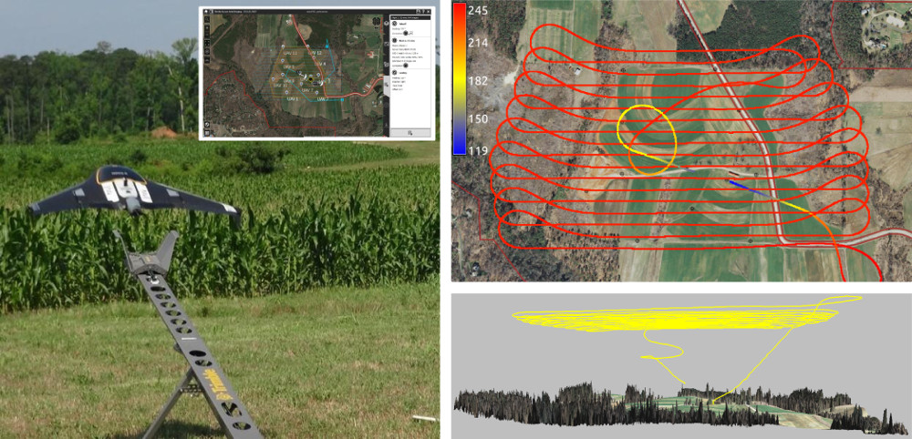
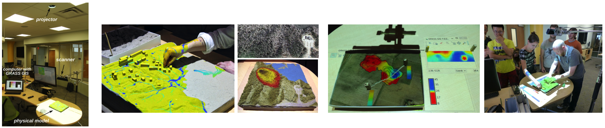
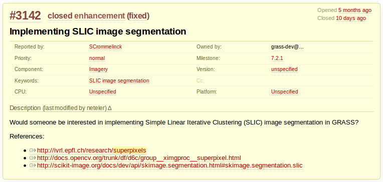
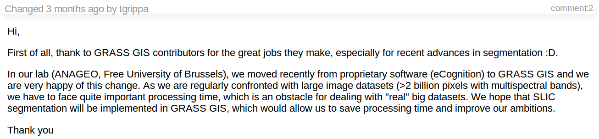
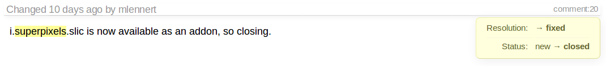

33 years of
GRASS GIS
as an innovation platform
Vaclav Petras
NCSU
GeoForAll Lab
at
Center for Geospatial Analytics
30th NCGIS, Feb 22-24, 2017, Raleigh NC
The beginning
- 1980-1982: Ideas, predecessors and prototypes
- 1983: First reference manual published
- 1985: Geographic Resources Analysis Support System 1.0 released
Let William Shatner do the introduction
GRASS GIS now

GRASS GIS
- general purpose spatial analysis and remote sensing software
- GUI, CLI, Python API, C API
- backend processing for QGIS, R, ...
- powerful 2D/3D raster, imagery and vector processing
- single/complete integrated software
- over 30 years of development
- OSGeo Foundation project

Old Innovations Are Still Serving Now
* The list is incomplete.
Solar radiation modeling
- available for about 20 years
- renewed several times (1996, 1999, 2002, 2003, 2006, 2008)
- parallelized version coming in 7.4

summer solstice dynamics on lidar DEM
Watersheds and stream extraction
- First worldwide map of watersheds derived from a global DEM
- Unique least cost path algorithm, no depression filling needed: r.watershed (1989)
- Updated for massive data sets (2011)
3D view

Space-Time Cube visualization
Jockey's Ridge 16m, 20m contour evolution isosurfaces


Multivariate splines
- 2D, 3D and 4D interpolation with tuneable tension (1993)
- Parallelized version coming in 7.4
- Splines with geometry analysis
- simultaneous topo analysis: gradients, curvatures
- tuneable level of detail, geometry preserving smoothing

64bit version
- since 2005 on Linux, Mac, Unix
- long established 64bit (nobody even talks about it)
- since 2016 on MS Windows
- also: large file support even on 32bit MS Windows
Path sampling method for flow
surface flow and erosion (1998)


Innovation with stability
2002 code in 2017
Command line code from the 1st edition of the "GRASS book" (Neteler, Mitasova) for version 5 pre-release, 2002
r.fill.dir in=elev elev=fill dir=dir r.mapcalc depr.bin="if((elev - fill)< 0., 1, 0)"Works in 6.4 as is
Current version: 7.2
version 5 pre-release
r.fill.dir in=elev elev=fill dir=dirdoesn't work in GRASS GIS 7, but gives advice:
Sorry, <elev> is not a valid parameter Required parameter <output> not set: Name for output depressionless elevationfix for version 7:
r.fill.dir in=elev output=fill dir=dir
Return of investment
Raster algebra version 5 pre-release and as is in G7:r.mapcalc depr.bin="if((elev - fill)< 0., 1, 0)"better:
r.mapcalc "depr_bin = if((elev - fill) < 0., 1, 0)"
Removed module
- r.los replaced by r.viewshed in 7.0
- existed together for some time in 6.x
- r.los still available in Addons
Raster algebra from 1992
15 lines long expression, 2 lines changed1992:
slope=90.-atan(sqrt(x*x + y*y)), a=round(atan(x,y)), aspect=if(x||y,if(a,a,360)),2017:
slope=-atan(sqrt(x*x + y*y)), a=round(atan(x,y)), aspect=if(x!=0||y!=0,if(a,a,360)),
GRASS GIS 7.0
Spatio-temporal Framework
- space and time for 2D, 3D rasters and vectors
- time series datasets managed in temporal database
- New modules: query, aggregation, conversion, statistics, gap filling
Gebbert, S., Pebesma, E., 2014. TGRASS: A temporal GIS for field based environmental modeling. Environmental Modelling & Software 53, 1-12.
Geomorphons
- landform detection
- Basic landforms extracted for the entire US
- On-line geospatial analytics: sil.uc.edu
- Spatial Informatics Laboratory, University of Cincinnati

More than just code
Link to research papers

Public author & accessible code

Discussions archived

since 1991
Addos repository
- user contributed modules, plugins, tools, functions
- distributed to users
- including compiled C and C++ for MS Windows
- automatically generated GUI
User-reviewed implementation
- user tested the module
- discovered error in equation in code

Reduced limits
- people limited by tools
- many fields covered
- no borders between remote sensing and vector network analysis
User Interfaces
Command Line Interface
r.fill.dir input=elev output=fill direction=dirscripting with Shell, Bash, cmd.exe, ...
Graphical User Interface
Graphical Modeler

Python
- since Python existed (90s)
- API and use in GRASS GIS itself in 2008
- grass package part of GRASS GIS
- access to GRASS GIS C functions and objects
import grass.script as gs
gs.run_command('r.fill.dir', input='elev',
output='fill', direction='dir')
Python
- since GRASS GIS 7.2 also integrated editor
R
- not part of GRASS GIS but well established
- rgrass7 package
- also accessible through RQGIS
execGRASS("r.fill.dir", input = "elev",
output = "fill", direction = "dir")
Other languages
- C
- used by GRASS GIS itself
- work for C++
- Perl
- PHP
- Java (JGrasstools, gvSIG)
- Web Processing Service (ZOO or PyWPS)
- Jupyter (methods, code and results together)
- Ruby (dedicated interface: grassgis gem)
r.fill.dir input: 'elev', output: 'fill',
direction: 'dir'
QGIS Processing plugin
- access to most of GRASS GIS modules
- unified interface to GDAL, SAGA, OTB, ...
- Python interface as well
QGIS GRASS plugin
- access to almost all of GRASS GIS modules
- seamless integration with GRASS GIS native database
- includes also CLI (GRASS shell)
Command Line

Command Line

Tangible Landscape
Tangible user interface for GRASS GIS 
GRASS GIS 7.2 and ongoing work
Temporal algebra
- temporal relations, temporal buffer, spatio-temporal operators
- includes spatial 2D raster, 3D raster and vector algebra
- prototype available in 2013, full version in 7.2
D = if(start_date(A) < "2005-01-01", A & B)
Spatially intersect (&) features for each time step in A and B after Jan 1, 2005
FUTURES
urban growth modeling

projected development around Asheville, NC
Default color table
Perceptually uniform — viridis
following Matplotlib

viridis and rainbow and their luminance
Itzï
flood simulation

June 2007 floods in the city of Hull, UK, image from itzi.org
SLIC Superpixels
SLIC: Simple Linear Iterative Clustering
SLIC Superpixels
SLIC Superpixels
SLIC Superpixels
Resources
See the full list of core modules and official addon modules.- Introduction to GRASS GIS
-
How to write a Python GRASS GIS 7 addon
also available as a YouTube video - Using GRASS GIS through Python and tangible interfaces
- Spatio-temporal data handling and visualization
- Urban growth modeling with FUTURES
-
Books (co-)authored at NC State:
- Open Source GIS: A GRASS GIS Approach
- Tangible Modeling with Open Source GIS (pre-print available)
- GIS-based Analysis of Coastal Lidar Time-Series
Get your lifelong license now!
Slides
ncsu-geoforall-lab.github.io/grass-as-a-platform
Booth
See GRASS GIS and Tangible Landscape in action at NC State booth.